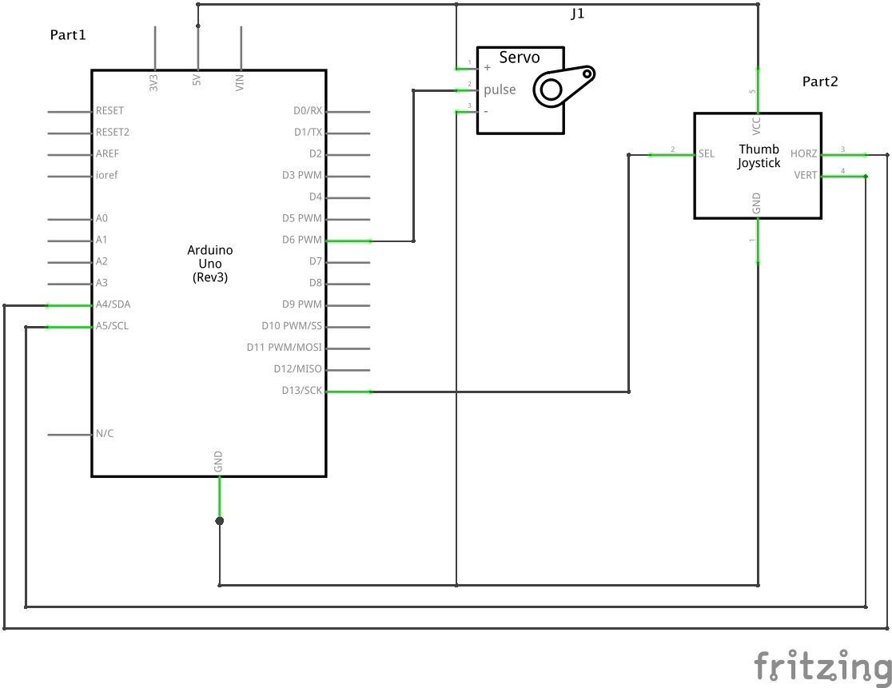
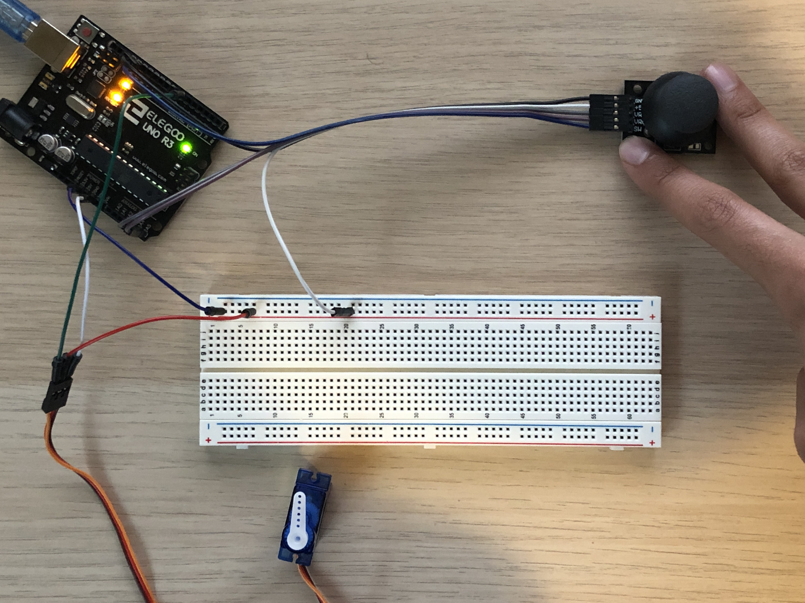

Arsh's Assignment 5!
Circuit in operation

When the joystick is moved, the servo motor mimics it by moving such that the blade faces the same direction that the joystick was pushed towards.
Schematic

Circuit

Code Snippet
#include <Servo.h> // include servo library
int servoPin = 6; // digital input pin that servo motor is connected to
int stickX = A4; // analog input pin that joystick x axis is connected to
int stickY = A5; // analog input pin that joystick y axis is connected to
int xValue = 0; // value read from joystick x axis
int yValue = 0; // value read from joystick y axis
Servo myMotor; // creates servo object
// set up the serial communications and servo
void setup() {
Serial.begin(9600); // initializes serial communications at 9600 bps
myMotor.attach(servoPin); // attaches servo to pin 11
}
// this function loops forever
void loop() {
xValue = analogRead(stickX); // read joystick x axis from analog input pin
yValue = analogRead(stickY); // read joystick y axis from analog input pin
if (xValue < 502 && yValue == 512) { // if joystick is facing left, point the blade left
myMotor.write(90);
} else if (yValue < 512 && xValue == 502) { // if joystick is facing up, point the blade up
myMotor.write(0);
} else if (yValue > 512 && xValue == 502) { // if joystick is facing down, point the blade down
myMotor.write(180);
} else if (yValue == 512 && xValue == 502) { // if joystick is not facing any direction (centered), move the blade to 0
myMotor.write(0);
}
}